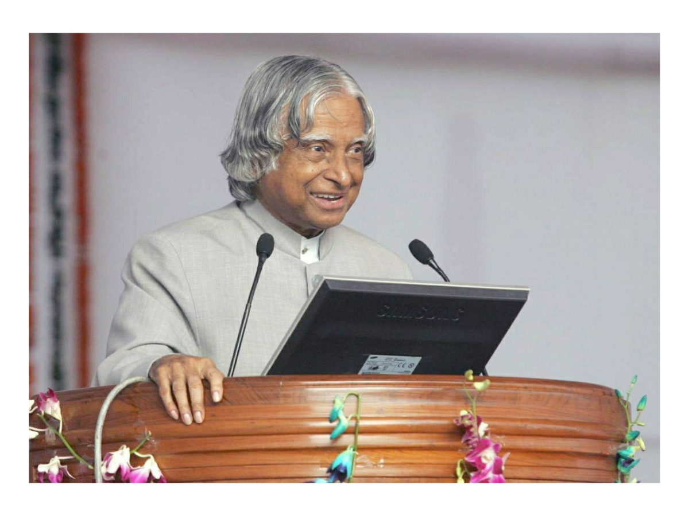
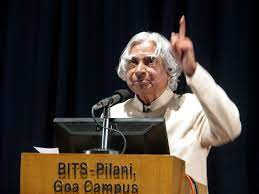
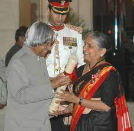
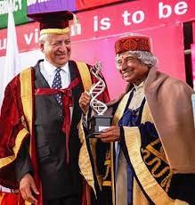

Dr.A.P.J.ABDUL KALAM
---Former President of India

PERSONAL LIFE
A.P.J Abdul Kalam, in full Avul Pakir Jainulabdeen Abdul Kalam was born on 15 October 1931 to a Tamil Muslim family in the pilgrimage centre of Rameswaram on Pamban Island, then in the Madras Presidency and now in the State of Tamil Nadu. His father Jainulabdeen was a boat owner and imam of a local mosque; his mother Ashiamma was a housewife.His father owned a ferry that took Hindu pilgrims back and forth between Rameswaram and the now uninhabited Dhanushkodi.Kalam was the youngest of four brothers and one sister in his family. Their business had involved trading groceries between the mainland and the island and to and from Sri Lanka, as well as ferrying pilgrims between the mainland and Pamban. As a result, the family acquired the title of "Mara Kalam Iyakkivar" (wooden boat steerers), which over the years became shortened to "Marakier." With the opening of the Pamban Bridge to the mainland in 1914, however, the businesses failed and the family fortune and properties were lost over time, apart from the ancestral home.By his early childhood, Kalam's family had become poor; at an early age, he sold newspapers to supplement his family's income.
On 27 July 2015, Kalam travelled to Shillong to deliver a lecture on "Creating a Livable Planet Earth" at the Indian Institute of Management Shillong. While climbing a flight of stairs, he experienced some discomfort, but was able to enter the auditorium after a brief rest.At around 6:35 p.m. IST, only five minutes into his lecture, he collapsed.He was rushed to the nearby Bethany Hospital in a critical condition; upon arrival, he lacked a pulse or any other signs of life.Despite being placed in the intensive care unit, Kalam was confirmed dead of a sudden cardiac arrest at 7:45 p.m IST.
"Black color is Sentimentally Bad,But every Black board makes a students life bright."
---Dr.A.P.J.Abdul Kalam
EDUCATION
In his school years, Kalam had average grades but was described as a bright and hardworking student who had a strong desire to learn. He spent hours on his studies, especially mathematics.After completing his education at the Schwartz Higher Secondary School, Ramanathapuram, Kalam went on to attend Saint Joseph's College, Tiruchirappalli, then affiliated with the University of Madras, from where he graduated in physics in 1954.He moved to Madras in 1955 to study aerospace engineering in Madras Institute of Technology.While Kalam was working on a senior class project, the Dean was dissatisfied with his lack of progress and threatened to revoke his scholarship unless the project was finished within the next three days. Kalam met the deadline, impressing the Dean, who later said to him, "I was putting you under stress and asking you to meet a difficult deadline".He narrowly missed achieving his dream of becoming a fighter pilot, as he placed ninth in qualifiers, and only eight positions were available in the IAF.
HONORARY DEGREES
Distinguished Fellow-Institute of Directors, India, 1994.
Honorary Fellow - National Academy of Medical Sciences, 1995.
Honorary Doctorate of Science - University of Wolverhampton, UK, 2007.
King Charles II Medal - UK, 2007.
Honorary Doctor of Engineering – Nanyang Technological University, Singapore, 2008.
International von Kármán Wings Award – California Institute of Technology, USA, 2009.
Hoover Medal – American Society of Mechanical Engineers, USA, 2000.
Doctor of Engineering – University of Waterloo, Canada, 2010.
Honorary Doctor of Laws – Simon Fraser University, Canada, 2012.
Honorary Doctor of Science – University of Edinburgh, Scotland, 2014.
IEEE Honorary Membership - Institute of Electrical and Electronics Engineers, USA, 2011.
“Dream is not that which you see while sleeping it is something that does not let you sleep.”
---Dr.A.P.J.Abdul Kalam
CAREER
After graduating from the Madras Institute of Technology in 1960, Kalam joined the Aeronautical Development Establishment of the Defence Research and Development Organisation (by Press Information Bureau, Government of India) as a scientist after becoming a member of the Defence Research & Development Service (DRDS). He started his career by designing a small hovercraft, but remained unconvinced by his choice of a job at DRDO.Kalam was also part of the INCOSPAR committee working under Vikram Sarabhai, the renowned space scientist.In 1969, Kalam was transferred to the Indian Space Research Organisation (ISRO) where he was the project director of India's first Satellite Launch Vehicle (SLV-III) which successfully deployed the Rohini satellite in near-earth orbit in July 1980; Kalam had first started work on an expandable rocket project independently at DRDO in 1965.In 1969, Kalam received the government's approval and expanded the programme to include more engineers.
Kalam served as the 11th President of India, succeeding K. R. Narayanan. He won the 2002 presidential election with an electoral vote of 922,884, surpassing the 107,366 votes won by Lakshmi Sahgal. His term lasted from 25 July 2002 to 25 July 2007.During his term as president, he was affectionately known as the People's President.


ACHIEVEMENTS
In 1963 to 1964, he visited NASA's Langley Research Center in Hampton, Virginia; Goddard Space Flight Center in Greenbelt, Maryland; and Wallops Flight Facility.Between the 1970s and 1990s, Kalam made an effort to develop the Polar Satellite Launch Vehicle (PSLV) and SLV-III projects, both of which proved to be successful.Kalam also directed two projects, Project Devil and Project Valiant, which sought to develop ballistic missiles from the technology of the successful SLV programme.Kalam played an integral role convincing the Union Cabinet to conceal the true nature of these classified aerospace projects.His research and educational leadership brought him great laurels and prestige in the 1980s, which prompted the government to initiate an advanced missile programme under his directorship.Kalam played a major part in developing many missiles under the mission including Agni, an intermediate range ballistic missile and Prithvi, the tactical surface-to-surface missile, although the projects have been criticised for mismanagement and cost and time overruns.
Kalam served as the Chief Scientific Adviser to the Prime Minister and Secretary of the Defence Research and Development Organisation from July 1992 to December 1999. The Pokhran-II nuclear tests were conducted during this period in which he played an intensive political and technological role. Kalam served as the Chief Project Coordinator, along with Rajagopala Chidambaram, during the testing phase.Media coverage of Kalam during this period made him the country's best known nuclear scientist.
In 1998, along with cardiologist Soma Raju, Kalam developed a low cost coronary stent, named the "Kalam-Raju Stent".In 2012, the duo designed a rugged tablet computer for health care in rural areas, which was named the "Kalam-Raju Tablet".
AWARDS AND RECOGNITIONS
- India declared his birthday as World Students' Day.
- Government of Tamil Nadu announced that an award will be given in his name Dr. A. P. J. Abdul Kalam Award.
- On 4 September 2015, Wheeler Island near the coast of Indian state Orissa has been renamed to honor the late Indian president, Dr. A.P.J. Abdul Kalam as A.P.J. Abdul Kalam Island.
- APJ Abdul Kalam with students A file picture of students of St. Aloysius college trying to greet APJ Abdul Kalam when he came to inaugurate the IT building of the college on March 28, 2003.
- He is awarded as "Von Braun" by National Space Society in 2013.
- He is awarded as "SASTRA Ramanujan Prize" by Shanmugha Arts,Science,Technology & Research Academy,India in 2000.
- He is awarded as "Veer Savarkar Award.' by Govt of India in 1998.
- He is awarded as "Indira Gandhi Award for National Integration" by Govt of India in 1997.
- He won "Bharat Ratna" by Govt of India in 1997.
- He won "Padma ViBhushan" by Govt of India in 1990.
- He won "Padma bhushan" by Govt of India in 1981.

“He who knows others is learned, but the wise one is the one who knows himself. Learning without wisdom is of no use.”
---Dr.A.P.J.Abdul Kalam